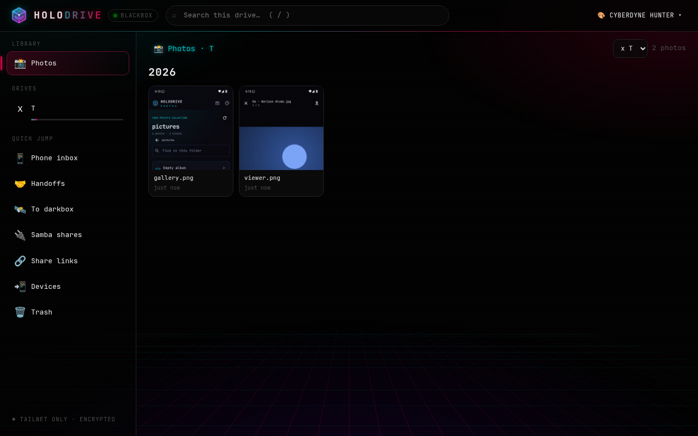
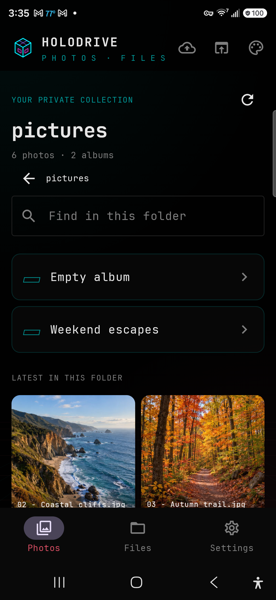
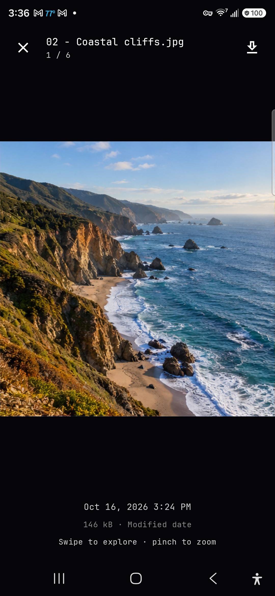

See the moments.
Browse image libraries as a visual gallery, grouped by year. Open a photo, move through the viewer, and download what you want to keep nearby.
PHOTO LIBRARY DETAILS ↗YOUR PRIVATE CLOUD / YOUR HARDWARE
Holodrive brings your photos and files into one fast, self-hosted library. Browse from the web or Android, share with care, and keep control of where everything lives.
● SELF-HOSTED — FILES + PHOTOS — CYBERGRID THEMES

01 / ONE LIBRARY, TWO VIEWS
Find the right view for the job. Switch from a photo timeline to a familiar folder browser without moving your files into someone else’s cloud.
Browse image libraries as a visual gallery, grouped by year. Open a photo, move through the viewer, and download what you want to keep nearby.
PHOTO LIBRARY DETAILS ↗Move through drives and folders, search the current location, select items, and upload or download files through the web interface.
FILE BROWSER DETAILS ↗Create links with optional passwords, expiry dates, and download limits. Drop boxes let others send files into a folder you choose.
SHARE LINK DETAILS ↗Use the Android companion to browse on the go and send files from other apps into your Holodrive library.
ANDROID PROJECT ↗02 / HOLODRIVE FOR ANDROID
Browse photos and files from your phone, save originals with Android’s file picker, and share files from other apps into your Holodrive upload queue.


SIGNED GITHUB RELEASES
Version 0.1.0 is available now for Android 11 and newer. Download the signed APK or view the release notes.
DOWNLOAD APK ↗Get update notifications by adding the Android app repository in Obtainium.curl -fL -o holodrive-photos.apk https://github.com/cybercoretech/holodrive-android-app/releases/latest/download/holodrive-photos.apkcurl -fL -o holodrive-photos.apk.sha256 https://github.com/cybercoretech/holodrive-android-app/releases/latest/download/holodrive-photos.apk.sha256 && sha256sum --check holodrive-photos.apk.sha25602 / YOU HOLD THE KEYS
Holodrive runs on a machine you control and works with the storage you already have. You choose which folders to expose, who can sign in, and how a shared link behaves.
03 / OPEN SOURCE
Read the setup guide, inspect the source, and build a private cloud around the devices and storage you already trust.